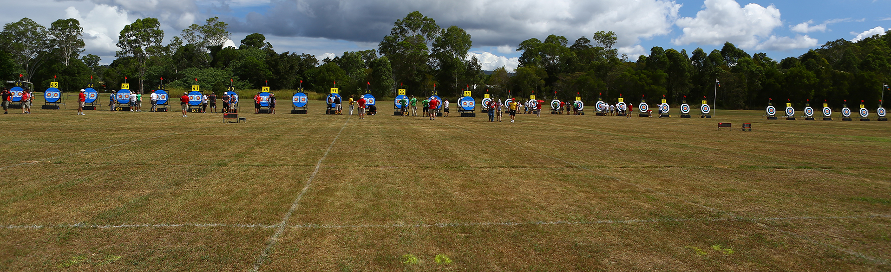

Welcome to Bendigo Target Archery Club. The club started in 1948 and is one of the oldest target archery clubs in Victoria.
We’re a family-friendly target archery club located at the Bendigo Racecourse off Golf Course Rd. Our facilities offer target, indoor and clout archery plus field archery practice and we host club, state and national level events.
Please note that we don’t allow casual walk-ins. You must be an Archery Australia member or be participating in a course to shoot at our club.
If you’re new to archery we hold archery courses each month. Please visit our Try Archery section for further details. If you’re an experienced archer and would like to join our club, please contact us to arrange an appointment.
